📎How to Attach the Business Central Updated “Doc. Attachment List Factbox” to Custom Tables and Pages in Business Central
The Doc. Attachment List Factbox in Dynamics 365 Business Central provides a quick overview of attached files on a record, without needing to open a separate page. It's essentially a more streamlined version of the standard Document Attachments FactBox, displaying file names and types directly within the FactBox pane.
With recent updates in Microsoft Dynamics 365 Business Central, the classic Document Attachment FactBox has been deprecated and replaced with the modern Doc. Attachment List Factbox, which allows multiple file uploads and an improved user interface. This guide walks you through integrating this new FactBox into your custom tables and pages, resolving common issues, and ensuring full functionality.
Why Use the New Doc. Attachment List Factbox?
- A sleek view of attached documents directly on the page.
- Support for multiple file uploads.
- Elimination of the need to open additional windows to view attachments.
🛠️ Step 1: Create a CardPart Page for the Attachment
Ensure you have your custom table and page ready. Then, create a Card object in AL (Visual Studio Code) using the Doc. Attachment table.
Example:
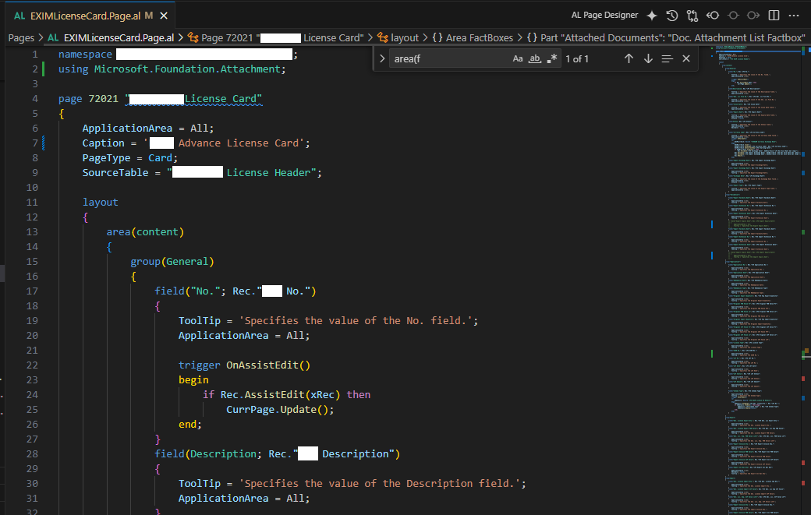
Step 2: Add the FactBox to Your Target Page
Add the CardPart to your main page (List or Card) inside the FactBoxes area.
Example:
layout
{
area(content)
{
// Main content here
}
area(FactBoxes)
{
part(Attachments; "Doc. Attachment List Factbox")
{
ApplicationArea = All;
SubPageLink = "Table ID" = const(Database::"Your Custom Table"), "No." = field("Your PK Field");
}
}
}
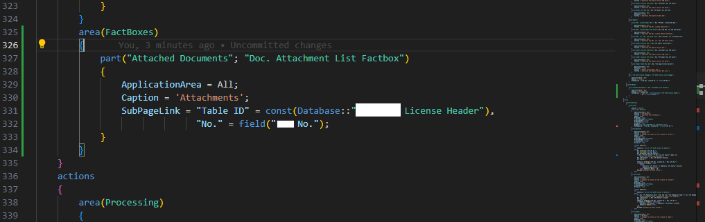
This will show the attachments panel on your custom page.
Output:-
And here how it’s going to look like
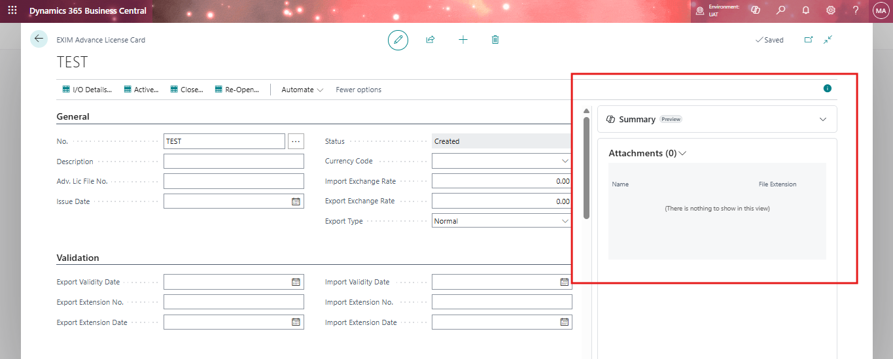
⚠️Common Issue: File Uploaded but Not Displaying
After uploading a document, you might find that it’s stored in the Document Attachment table, but not visible in the FactBox UI. To fix this, implement the following Event Subscribers to link your custom table to the FactBox.
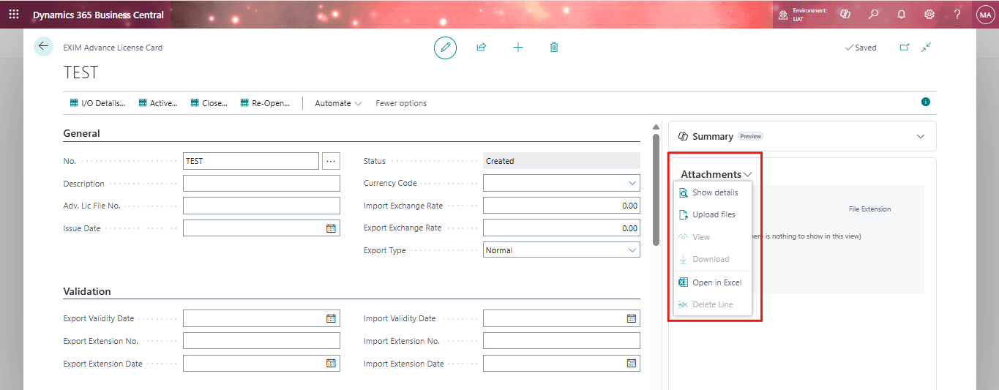

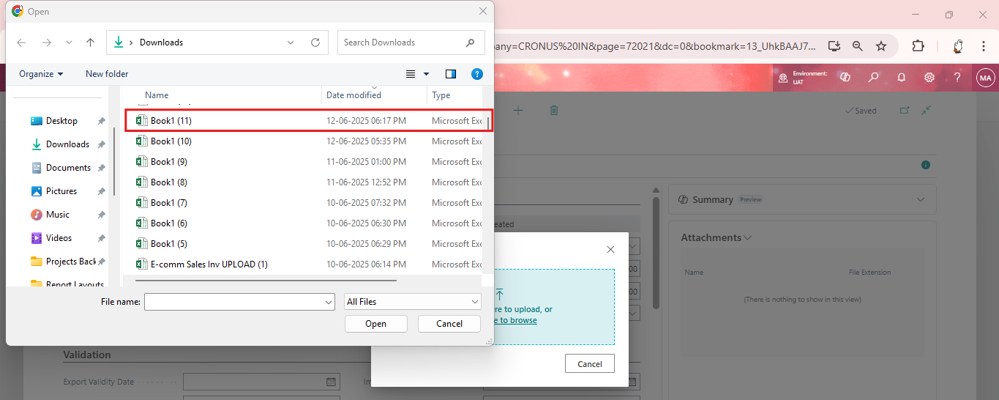
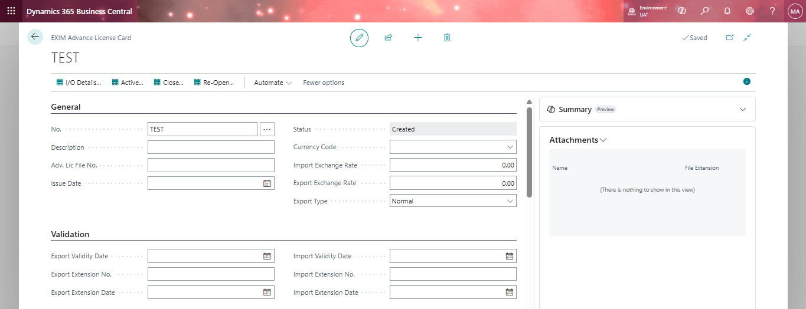
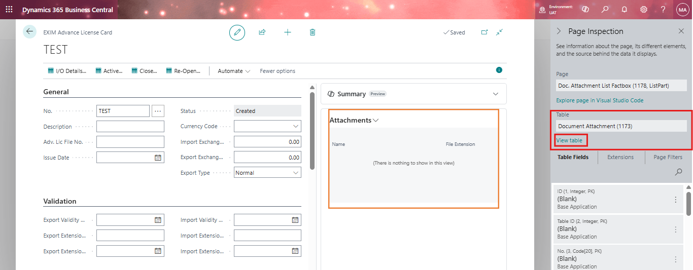
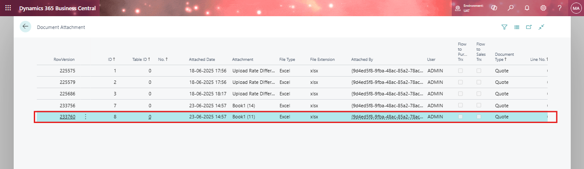
🎯Step 3: Event Subscribers for Custom Table Integration
- OnAfterGetRecRefFail in Doc. Attachment List Factbox
- OnAfterInitFieldsFromRecRef in Document Attachment
[EventSubscriber(ObjectType::Page, Page::"Doc. Attachment List Factbox", OnAfterGetRecRefFail, '', false, false)]
local procedure "Doc. Attachment List Factbox_OnAfterGetRecRefFail"(var Sender: Page "Doc. Attachment List Factbox"; DocumentAttachment: Record "Document Attachment"; var RecRef: RecordRef)
var
EXIMLicenseHeader: Record "LFS EXIM License Header";
begin
case DocumentAttachment."Table ID" of
DATABASE::"LFS EXIM License Header":
begin
RecRef.Open(DATABASE::"LFS EXIM License Header");
if EXIMLicenseHeader.Get(DocumentAttachment."No.") then
RecRef.GetTable(EXIMLicenseHeader);
end;
end;
end;
[EventSubscriber(ObjectType::Table, Database::"Document Attachment", OnAfterInitFieldsFromRecRef, '', false, false)]
local procedure "Document Attachment_OnAfterInitFieldsFromRecRef"(var DocumentAttachment: Record "Document Attachment"; var RecRef: RecordRef)
var
FieldRef: FieldRef;
RecNo: Code[20];
begin
case RecRef.Number of
DATABASE::"LFS EXIM License Header":
begin
FieldRef := RecRef.Field(1);
RecNo := FieldRef.Value;
DocumentAttachment.Validate("No.", RecNo);
end;
end;
end;
🔄 Uploading and Viewing Attachments
Once the events are in place:
1. Upload a document using the FactBox UI.
2. The file is stored in the Document Attachment table.
3. The FactBox now shows the attachment on the card page and list page.
4. Users can download and preview attachments seamlessly.
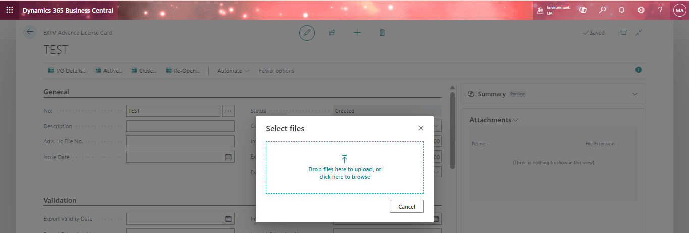

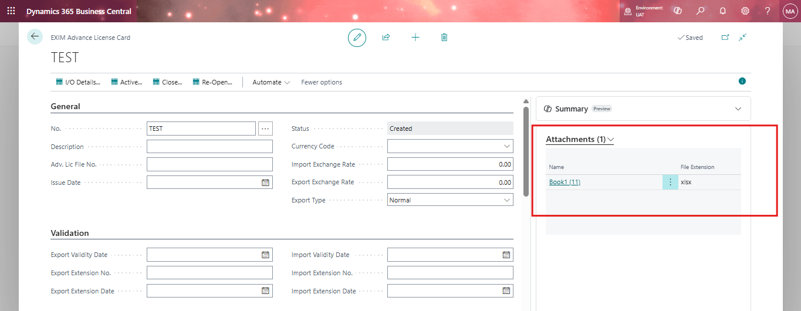
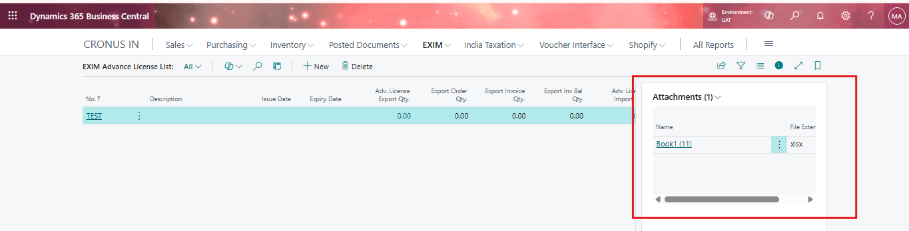
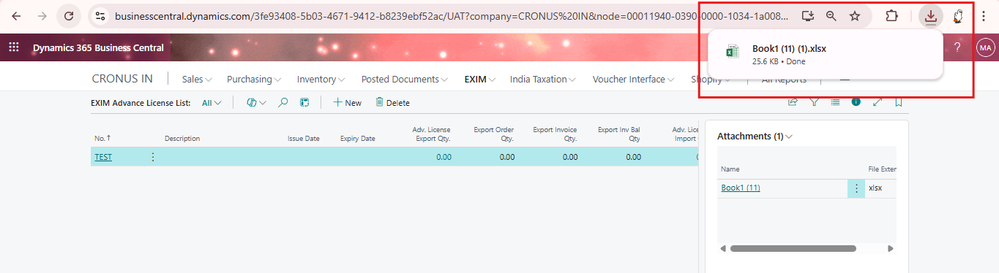
✅ Bonus: Tested Features
- Multiple Attachments are supported.
- Attachment Count is accurately displayed.
- File Downloads are working correctly.
- Same document appears on both Card and List pages.
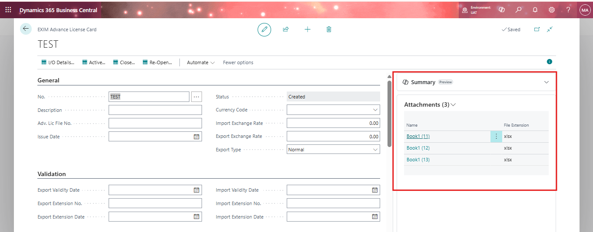
📘 Summary
Feature | Status |
FactBox Added to Custom Pages | ✅ Complete |
Attachments Displaying Properly | ✅ Fixed |
Event Subscribers for Custom Table | ✅ Implemented |
Multiple Attachments | ✅ Supported |
File Download | ✅ Functional |
📌 Final Thoughts
With just a few lines of AL code and correct event subscriptions, you can easily integrate the new Doc. Attachment List Factbox into your custom pages—future-proofing your extensions and delivering a better experience for end-users.